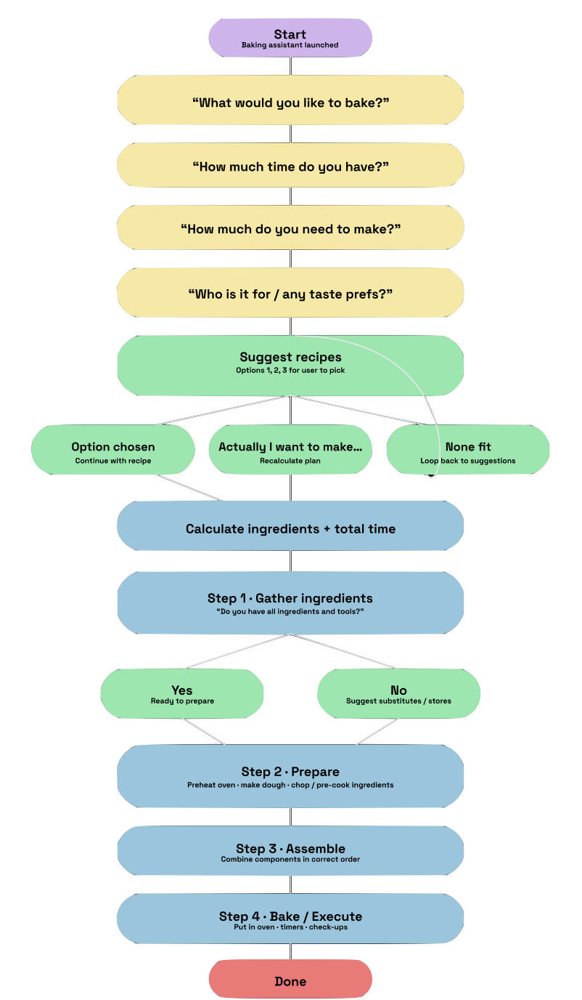
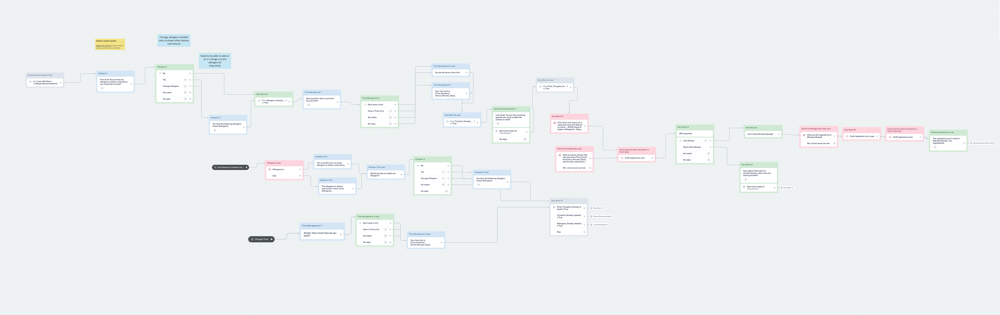
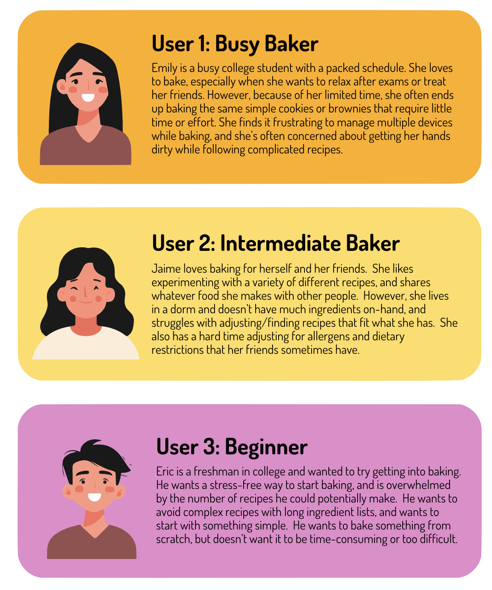

BakeBot
AI Conversational interface for hands-free recipe preparation and workflow optimization
Challenge
Baking requires constant attention across multiple steps, tools, and sources of information. Existing recipe tools fragment this process across screens and interactions, forcing users to context switch, handle devices with messy hands, and mentally track progress—leading to errors and cognitive overload.
Outcome
Designed a voice-first baking assistant that centralizes guidance into a single conversational interface, enabling hands-free interaction, real-time step tracking, and adaptive support. The system reduces cognitive load and supports task continuity by acting as an active, context-aware companion throughout the baking process.
Problem Statement & Solution
Existing recipe tools fragment attention across multiple platforms, tabs, or devices. This context switching leads to frustration and error—particularly in high-attention tasks like baking. BakeBot consolidates these interactions through a single conversational interface, replacing manual navigation with direct, context-aware dialogue.
Central Question
How might conversational interfaces support task continuity and cognitive offloading in multi-step, hands-on workflows such as baking?
Objectives
- Understand user context and preferences.
- Provide adaptive, conversational recipe guidance and conversions.
- Maintain low cognitive load in multitasking environments.
Design
User Flow
We mapped three main flows—recipe selection, step-by-step guidance, and workflow optimization—around cognitive continuity: keep hands free, keep attention on making, and let voice handle the orchestration.

Final Flows
- Conversational step guidance.
- Dynamic conversion and substitution assistance.
- Personalized prompts based on inventory, pacing, and preferences.

Research
Research Goals
- Identify user pain points in recipe following and ingredient preparation.
- Determine accessibility requirements for hands-free, multimodal use.
- Explore automation opportunities in task tracking, timing, and reminders.
Needs & Assumptions Analysis
| Needs | Assumptions |
|---|---|
| Measurement conversions | The baker has access to the ingredients. |
| Access to recipes (internet or locally stored) | The baker has time to complete preparation. |
| Timer capabilities and step retention | The baker has access to essential kitchen tools. |
| Knowledge of user tools and available ingredients | The baker can hear and follow instructions. |
| Understanding user preferences and possible substitutions | — |
Research & Discovery
Early exploration focused on identifying user frustrations and expectations. A short-form survey and targeted interviews were conducted with home bakers to understand device interaction, ingredient management, and attention flow.
-
Survey Questions Included:
- What’s the most challenging part of baking and following a recipe?
- How do you handle missing or substitute ingredients?
- Which platforms do you typically use (cookbooks, phone, computer)?
- Do you encounter issues using a device while cooking?
- What would you consider a must-have feature in a baking assistant?
Key Insights
- Attention management: Users value a “steady companion” that anticipates needs rather than reacts.
- Confidence over automation: Natural tone and pacing improved user trust more than task speed.
- Accessibility: Hands-free and screen-minimal design expanded usability for neurodiverse and motor-impaired participants.
User Studies
Surveys and interviews with home bakers (novice to experienced) surfaced confusion around measurements, uncertainty about substitutions, and difficulty keeping track of steps when multitasking.
Stakeholder Analysis
| Who | Why We Care About Them | How to Satisfy |
|---|---|---|
|
Users / Directly Affected Person following a recipe |
Primary users of recipe assistance tools. Priority: High |
Ease of following directions, measurement and substitution conversion tools, accurate and timely updates. |
|
Approvers / Blockers and Concerned Recipe Websites / Cookbook Providers |
Help bakers with recipes, conversions, and preparation steps and logistics.
Recipe publishers are affected if bakers are able to use their own recipes
or come up with it themselves. Priority: Medium |
Expect clarity on recipes, ingredients, preparation times, and specific details. |
|
Transformers Appliance Salesman / Maintenance |
Install ovens, stoves, refrigerators, and other machinery necessary for baking. Priority: Low |
Ensure there is a workspace that is useable and dependable for baking and preparation needs. |
|
Suppliers Grocery Stores |
Easy and dependable access to groceries and ingredients for baking needs. Priority: Medium |
Need information on what ingredients are popular and in high demand for baking and preparation. |
Boundary & Hazard Mitigation
| Boundaries / Hazards | Likelihood (0–10) | Severity (0–10) | Expected Impact | Mitigation Strategy |
|---|---|---|---|---|
| Externalities Appliance Malfunction |
2 | 9 | 18 |
Incorporate a troubleshooting option in the assistant. Cost Effectiveness: Medium ($$) |
| Resources Unavailable Ingredients |
4 | 8 | 32 |
Depending on user preference, provide alternative stores,
shipping options, or substitute ingredients. Cost Effectiveness: Medium ($$) |
| Operations / Use Cost of Ingredients, Bakeware, etc. |
6 | 8 | 48 |
Offer alternative methods, ingredients, or recipes to accommodate budget.
Incorporate a budget tool specific to weekly baking. Cost Effectiveness: Medium ($$) |
| Externalities Possible Allergies |
3 | 9 | 27 |
Make users aware of any present allergens in recipes immediately.
Offer substitute ingredients. Cost Effectiveness: High ($) |
Personas

Testing
Moderated scenario-based testing measured completion time, step accuracy, and satisfaction. Remote conditions limited realism; feedback prompted tighter dialogue pacing, clearer confirmations, and more natural rhythm.
Usability Reports
Read the full usability testing documents for BakeBot, which detail methodology, participant findings, and design iterations.
| Enjoyment of using Bakebot | Ease of Use | Preference Over Current Methods | |
|---|---|---|---|
| Round 1 | 7 | 8 | 3.5 |
| Round 2 | 6 | 9 | 4 |
Reflections
- Structured needs analysis highlighted essential features early.
- Designing for cognitive load is crucial for voice-first tools.
- Conversational rhythm (pauses, confirmations, tone) shapes trust and flow.
What’s Next
- Expand recipes (dietary & regional variations).
- Integrate IoT with smart appliances for real-time feedback.
- Run in-home longitudinal studies for sustained-use insights.